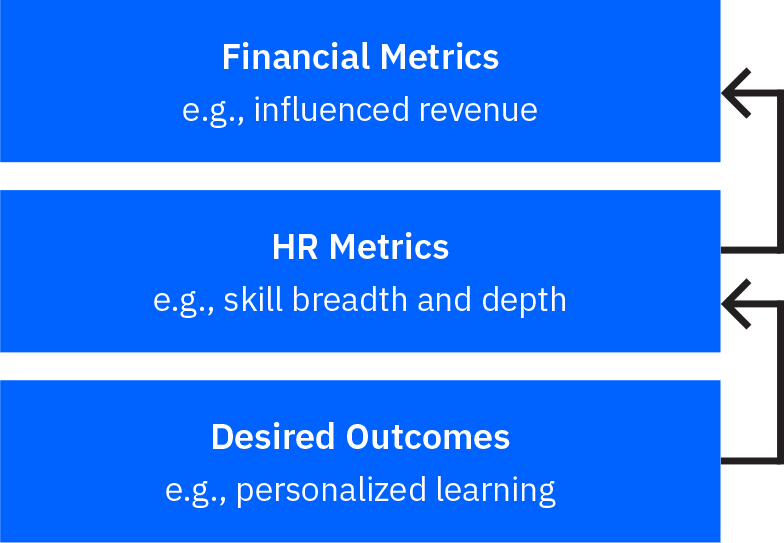

Start your journey to AI in HR

See how AI can work for your team
Answer three simple questions to get started—with immediate results.

Get insights like this in your inbox
Stay current on talent management trends with the Smarter Workforce newsletter.
Download the full report
Download the PDF version for practical insights you can print and share.
The business case for AI in HR
01
3 min read
A moment to seize for the
HR profession
“This report tells the story of what’s possible and how to get there.”
— Diane Gherson, Chief Human Resource Officer, IBM
“This report tells the story of what’s possible and how to get there.”
— Diane Gherson, Chief Human Resource Officer, IBM
Foreword
HR is on the brink of massive disruption. The ubiquity of mobile and social technologies and personalization has redefined the bar for employee experience. With the disruption of business models across all industries, the talent acquisition game has changed and with the impact of technological change on work, the need for a continuous learning culture has never been more urgent. The CHRO stands at the intersection of all these demands, generally with a declining budget and ongoing operational distractions.
Just at this opportune moment, AI and automation are becoming accessible for the HR profession. In my experience, it's enabling us to solve pervasive talent issues such as knowing our skills, preventing unwanted employee turnover, reacting quickly to employee hot spots, matching employees and external candidates with career opportunities, supporting managers with better salary investment guidance, eliminating manual tasks in benefits administration and payroll through robotic process automation, and creating an irresistible platform for employees to learn on the go.
With some upskilling, ethical operating guidelines, and a healthy dose of technical curiosity, the HR function is now positioned to truly drive strategic advantage while better supporting the workforce we rely on to put the strategy into action.
This report tells the story of what’s possible and how to get there. with specific examples showcasing what we’ve done at IBM, and practical tips to help others embark on their AI journey in HR. And, as I witness the benefits first hand, I couldn’t be more optimistic about the possibilities that lie ahead.
Introduction
Every aspect of life and work is being transformed by AI. Leading organizations understand the impact of AI on business models, workforce demographics, and the changing experiences expected by customers and employees alike. AI combined with strategic insight creates new business opportunity and is transforming the way HR contributes to an organization's competitive advantage.
This report outlines tangible examples of where AI is delivering value in HR today. It describes the pioneering work of IBM’s own internal HR team, who together with IBM’s client services experts have developed AI solutions for HR that are truly remarkable. Many of the examples described, which were developed initially for internal IBM employee use, delivered such significant value that they are now offered commercially. These include IBM Watson Candidate Assistant, IBM Watson Recruitment, IBM Watson Career Coach, and Your Learning.
For the last decade, IBM has been proud to work with clients around the world on their most important transformations. We help our CHRO clients and their teams on their HR reinvention paths, building the business cases for investment, ensuring meaningful business and employee outcomes, and providing unique insights into how to manage change driven by digital and AI reinvention.
As a leading talent-centric, AI-powered organization, we are excited to be at the forefront of this journey.
Tina Marron-Partridge
Managing Partner
Global Leader Talent & Engagement, IBM
02
3 min read
AI signals an HR technology
step change
HR departments were once primarily administrative functions.
Referred to as personnel departments, the key responsibilities were clerical, and work in the HR department focused on record keeping about the workforce. But the view of Human Resources has evolved considerably in the last 30 years. Research has shown the ways organizations manage their workers have important implications for how well organizations perform.1
Today the phrase ‘strategic HR’ is used to refer to HR practices that provide a competitive advantage to organizations.2 The strategic HR movement has seen a shift in HR's focus from administrative practices to high performance HR practices like teamwork and performance management, which focus on key jobs rather than every job and on groups of critical workers rather than every worker.3
Until recently, the primary benefit of technology has been to provide efficiency gains; it allowed us to do the same things we always did, but faster and more cost effectively.4 For example, previously technology allowed us to recruit people faster over the internet, but now AI lets us recruit the right people faster by assessing skill match for roles, predicting the likelihood of future success, and estimating the expected time to fill any given role. This is an example of the ways in which AI is changing the situation so that technology enables the HR function to solve critical business challenges, building on earlier contributions from workforce analytics. Where previous HR initiatives led to incremental change, AI offers the opportunity for exponential performance improvements in HR.
Defining AI
AI is an umbrella term that encompasses areas such as machine learning and cognitive computing. AI is a branch of computer science that deals with the simulation of intelligence behavior in computers. AI has been successfully used in visual perception, natural language processing, speech recognition, speech-to-text conversion, language translation, tone analysis, and other areas.
Sources
2 Ployhart, R. E., & Hale Jr, D. (2014). The fascinating psychological microfoundations of strategy and competitive advantage. Annu. Rev. Organ. Psychol. Organ. Behav., 1(1), 145-172.
3 Cappelli, P., & Keller, J. R. (2014). Talent management: Conceptual approaches and practical challenges. Annu. Rev. Organ. Psychol. Organ. Behav., 1(1), 305-331.
4 Lewis, R. E., & Heckman, R. J. (2006). Talent management: A critical review. Human resource management review, 16(2), 139-154.
03
5 min read
Why AI is being used
in HR
“AI is an accelerator – it allows us the ability to ingest a variety of data and provide context to a decision maker or employee or business leader. It allows us to deliver the right intelligence in the moment and achieve personalization at scale.”
— Tom Stachura, Vice President Talent Solutions & People Analytics, IBM
“AI is an accelerator – it allows us the ability to ingest a variety of data and provide context to a decision maker or employee or business leader. It allows us to deliver the right intelligence in the moment and achieve personalization at scale.”
— Tom Stachura, Vice President Talent Solutions & People Analytics, IBM
Today, AI’s capabilities are being used to augment, business operations and consumer solutions.
We have identified five primary reasons for implementing AI in HR:
1. To solve pressing business challenges
AI enables HR organizations to deliver new insights and services at scale without ballooning headcount or cost. Persistent challenges, like having the people resources to deliver on the business strategy and allocating financial resources accordingly, can be addressed through the thoughtful application of AI solutions.
2. To attract and develop new skills
The business world is constantly being disrupted. In order to cope with this disruption, businesses need to respond faster to opportunities, and to work in an agile way to stay ahead of competitors. This means finding an effective way to compete for the skills required to innovate in this new operating environment. AI applications enable HR departments to acquire and develop employee skills in lockstep with shifting market demand.
3. To improve the employee experience
People have started to expect something different when they come to work; they want a personalized experience, not a standard one. They want things to be tailored and offered to them in a way that works for them from the start to the end of a process. Today, people can also look inside a business from the outside with sites like Glassdoor, which puts a huge premium on the employee experience.
4. To provide strong decision support
The speed of change and rate at which information is being generated means that business decisions today are best made analytically. Because the amount of information that needs to be considered is vast, AI can be used to make sense of it and deliver recommendations. As a result, the information managers and employees require is there just when they need it. AI also provides the opportunity for employee voices to be heard and acted upon in real time.
5. To use HR budgets as efficiently as possible
AI can enable HR to become more efficient with its funding. HR spend can shift to higher value and more complex problem solving, without reducing levels of service for workers who have more routine HR queries. HR savings made in this way can be reinvested in further AI deployment, increasing HR’s ability to solve business challenges, continuously develop strategic skills, create positive work experiences, and provide outstanding decision support for employees.
An HR ‘moon shot’
As you read through this paper, we hope you'll keep in mind the idea of a 'moon shot' for applications of AI in HR. Like President John F. Kennedy’s 1961 seemingly impossible goal of sending a person to the moon within 10 years when the technology for such a feat did not exist, AI opens the door to previously unimaginable possibilities. For example, a potential moon shot for driverless cars is the objective of zero accident-related motor vehicle deaths. Applications of AI in healthcare have the ultimate objective of eradicating diseases. What might the moon shot be for applications of AI in HR? A moon shot for AI in HR could be that employees are in complete control of their careers because AI helps their skills evolve at the same speed that technology evolves. In other words, a moon shot could be that AI helps workers renew their skills before existing skills become obsolete. Different organizations will likely have different moon shots for AI in HR. What is the moon shot in your organization?
How AI can be used in HR
Deployment of AI in HR can occur across the entire talent lifecycle. See figure 1 in the next sections, examples of AI use cases at each point in the talent lifecycle are outlined.
“Ask yourself: What things would be better if they were done 24/7? What would be better if it were done at scale? What would benefit from greater consistency? What would be possible if we leveraged broader expertise to see beyond our current limits? These are good candidates for AI.”
— Debora Bubb, Vice President and Chief Leadership, Learning & Inclusion Officer, IBM
“Ask yourself: What things would be better if they were done 24/7? What would be better if it were done at scale? What would benefit from greater consistency? What would be possible if we leveraged broader expertise to see beyond our current limits? These are good candidates for AI.”
— Debora Bubb, Vice President and Chief Leadership, Learning & Inclusion Officer, IBM
04
7 min read
How AI can be used
in talent acquisition
Attract: Enhancing candidate experience
AI has been deployed in HR to identify high quality candidates even prior to job seekers applying for jobs, in the candidate attraction phase. During this part of the talent life-cycle, the goal is to source as many potential candidates as possible who have the required skills for a particular position.
“When we piloted AI for candidate attraction we saw a big increase in candidates applying for jobs at IBM, and there was greater stickiness. In addition, Net Promoter Score feedback said the AI was engaging. People felt it answered their questions, was relevant and useful.”
— Joanna Daly, Vice President Talent, IBM
“When we piloted AI for candidate attraction we saw a big increase in candidates applying for jobs at IBM, and there was greater stickiness. In addition, Net Promoter Score feedback said the AI was engaging. People felt it answered their questions, was relevant and useful.”
— Joanna Daly, Vice President Talent, IBM
Specialized chatbots deployed during candidate attraction offer candidates the opportunity to ask questions that are interpreted and responded to using natural language processing (NLP). This technology allows prospective applicants to learn more about the organization before they actually apply, a critical capability in an age where workers do extensive research about companies and brand reputations before applying. It also leads to better job matching compared to more traditional approaches based on keyword searches.
AI candidate engagement at IBM
IBM’s goal was to create a meaningful experience that engages job seekers from the first interaction, while at the same time developing a shared understanding of their suitability for roles that match their skills. The AI solution IBM developed to address this challenge is called Watson Candidate Assistant (WCA).
WCA has changed the way job seekers engage with IBM. Previously, candidates and employers would meet for the first time at the job interview, after learning about the opportunity from an online jobs board or career website. By leveraging AI, candidates and employers can now have real-time interaction via a chatbot, resulting in a more personalized application process for job seekers. The richer information applicants receive in turn leads to a stronger fit of job applicants for roles.
These chatbots get smarter with every interaction. Videos can also be embedded into the process to give a much more realistic preview of what it's like to work at the organization. The end result of implementing these capabilities at IBM has been an increased flow of high potential candidates. In a trial study where WCA was compared to a traditional static website, the conversion from exploring to application for WCA was 36%, versus 12% for the traditional static website. Net Promoter Scores (NPS) were also higher for WCA compared to traditional application routes, and the time from application to interview has been dramatically reduced.
“IBM gets 7,000 resumes per day and surfacing the right candidate in a reasonable time is like finding a needle in a haystack. Since implementing WCA, we have dramatically cut time to hire, doubled NPS, and vastly improved the matching of candidates to jobs.”
— Carrie Altieri, Vice President HR Communications, IBM
“IBM gets 7,000 resumes per day and surfacing the right candidate in a reasonable time is like finding a needle in a haystack. Since implementing WCA, we have dramatically cut time to hire, doubled NPS, and vastly improved the matching of candidates to jobs.”
— Carrie Altieri, Vice President HR Communications, IBM
Efficient and effective recruitment
The job of a recruiter is time pressured and complex, often having to fill many roles at once. Recruiters need to prioritize all of the different roles they are responsible for, and at the same time, they need a way to differentiate among candidates competing for the same role. Not meeting these challenges effectively enough can mean the wrong roles get prioritized, and even where the right roles are prioritized, the wrong candidates might be selected for roles.
“Overall, this is a story about data providing you with exponential learning opportunities and better decision-making capabilities. In talent acquisition at IBM, incorporating AI into the recruiting and sourcing functions augments our recruiters’ ability to make better decisions that drives more business value.”
— Amber Grewal, Vice President, Global Talent Acquisition, IBM
“Overall, this is a story about data providing you with exponential learning opportunities and better decision-making capabilities. In talent acquisition at IBM, incorporating AI into the recruiting and sourcing functions augments our recruiters’ ability to make better decisions that drives more business value.”
— Amber Grewal, Vice President, Global Talent Acquisition, IBM
AI can be used in this setting to predict how long a job requisition will take to fill based on historical data, allowing recruiters to reprioritize as needed. AI can also be used to determine the match between a candidate’s resume and the job requisition, and to make accurate predictions of future performance based on information about the candidate collected in the job application process. Furthermore, it can help recruiters write more inclusive job descriptions and filter candidates more effectively, minimizing the impact of unconscious bias in their process and practices.
AI recruitment at IBM
In a large organization like IBM, effective prioritization of recruitment demands careful selection of applicants. IBM needed a better way to help recruiters surface the top candidates for open jobs and to prioritize the most important requisitions. The solution developed, IBM Watson Recruitment (IWR), uses AI to leverage information about the job market and past experiences of hiring candidates to predict time to fill and identify the candidates most likely to be successful.
By helping the recruiter prioritize and rank candidate suitability, AI frees up time to focus on the core of recruiting: building and nurturing relationships with candidates. AI derives required skills from job requisitions and generates a match score against skills described in resumes. The solution can also generate a predictive score based on biographical data (whether or not they have led a team) in the resume. These scores predict future job performance. Importantly, IWR monitors hiring decisions to make sure they are free from bias. In summary, deploying AI in the recruitment function allows faster and more accurate hiring, and a better candidate and recruiter experience.
05
12 min read
How AI can be used across the
employee experience
Engage: Enhancing motivation
Two specific uses of AI that support manager effectiveness are manager talent alerts and engagement analysis. AI talent alerts are notifications for first line managers about their team members. They help managers make decisions about their people, based on a range of information that the application has on each team member and the worker population at an organization.
AI engagement analysis is technology that can analyze social media content from inside a company. This technology can analyze unstructured content from annual surveys and pulse surveys, as well as social media chatter. Hundreds of thousands of comments can be analyzed for themes in a matter of hours. For data privacy reasons it is advisable to limit listening to information within a corporate firewall.
“If we were to read manually through the comments we get in our engagement survey, by the time we finish it would be time for our next survey! Instead we use technology to summarize feedback in a way that’s consumable and leads to suggested actions.”
— Sadat Shami, Director Talent Development, Engagement & Social Analytics, IBM
“If we were to read manually through the comments we get in our engagement survey, by the time we finish it would be time for our next survey! Instead we use technology to summarize feedback in a way that’s consumable and leads to suggested actions.”
— Sadat Shami, Director Talent Development, Engagement & Social Analytics, IBM
AI manager alerts at IBM
At IBM, managers get alerts tailored to the needs of individual employees. For example, if someone has been on a team a long time, has certain skills, and is ready for a promotion, the manager is alerted to this fact. Similarly, managers receive alerts about employees with a greater propensity to leave. When sales people are at risk of missing quotas, early interventions can be suggested to get people back on track. Alerts such as these better enable managers to make decisions that are consistent with an organization’s talent management approach by suggesting the recommendations for decisions that HR would like to see implemented.
AI chatter analysis at IBM
At IBM, chatter analysis is used to surface the three top issues from social media sources within the company firewall. This provides recommendations that are personalized to a specific leader to help improve engagement in their team. If an employee received recognition for outstanding work, for example, IBM might recommend to their manager to amplify that feedback by sharing it with others.
IBM has observed that these sorts of actions improve engagement. ‘Engage at IBM’ is an AI application that learns; the leader provides feedback on the recommendations and the system will improve as a result. As the system gets better, so too does the manager's effectiveness at managing and inspiring their teams.
Retain: Smarter compensation planning
Making sound compensation decisions requires careful consideration of a wide range of factors. In addition to performance, these factors include the market rate for the skills, how in demand the skills are, and whether it is better to reward strong performance in base pay or in bonuses. To make optimal base pay decisions that reflect this line of thinking, you need a deep understanding of employee skills, the going rate for those skills, and whether those skills are increasing or decreasing in demand. There can be many more data points that need to be considered than a person can analyze without analytical support.
“If compensation decisions are based on just one or two data points, such as tenure and performance, a manager can make the decision without analytical support. But managers should consider many factors, such as market rates and propensity to learn. With more data points, AI is needed to avoid underpaying some and overpaying others.”
— Nickle LaMoreaux, Vice President Compensation & Benefits, IBM
“If compensation decisions are based on just one or two data points, such as tenure and performance, a manager can make the decision without analytical support. But managers should consider many factors, such as market rates and propensity to learn. With more data points, AI is needed to avoid underpaying some and overpaying others.”
— Nickle LaMoreaux, Vice President Compensation & Benefits, IBM
The advent of AI-based compensation support can lead to thousands of hours of preparation for compensation cycles being reduced to just a few hours, while providing decision advice that examines many more variables than were previously considered. Furthermore, by focusing on skills in determining compensation, the use of AI minimizes chances that bias exists in the compensation process.
AI-supported compensation planning at IBM
Making complex compensation decisions accurately across an organization is a challenge, and one that IBM uses AI to address. IBM designed an AI-powered decision support tool that assists with compensation planning, helping managers avoid underweighting or overweighting the critical data points. The application reviews dozens of data points in making its recommendations, integrating external information from sources like the Bureau of Labor Statistics with internal data on factors such as cost to replace. The application is currently being deployed for tens of thousands of first-line managers to assist with their compensation planning, following successful early trials in focused geographies.
Importantly, when using the tool, managers have the opportunity to override the AI recommendation about any given employee, and the system can continue to learn from managers’ actual decisions. In general, managers tend to follow the recommendations the AI provides, and this has helped ensure employees are not overpaid or underpaid at IBM. IBM also emphasizes transparency in AI-based compensation support: employees can see where they sit relative to the market, because the low and high range of compensation for workers with their skills is provided, in addition to their personal salary.
Develop: Personalized learning
“With AI, we are able to see how learning relates to engagement without even having to ask our employees for their perceptions. If managers went to manager training, are their people more engaged? We have the answer and that gives us important feedback on how effective our training is.”
— Gordon Fuller, Vice President and Chief Learning Officer, IBM
“With AI, we are able to see how learning relates to engagement without even having to ask our employees for their perceptions. If managers went to manager training, are their people more engaged? We have the answer and that gives us important feedback on how effective our training is.”
— Gordon Fuller, Vice President and Chief Learning Officer, IBM
AI in a learning context can help accelerate skill development at the level of the individual, and it can optimize learning at the level of the organization. One of the areas with the most promise is AI tagging of learning content. In the past, when learners interacted with a learning management system, the content they found depended largely on the descriptions that the developers uploaded with the training in the first place. These descriptions are called metadata. With AI tagging, resources such as images and documents that are uploaded to learning management systems are enriched with metadata through AI technologies, and this helps learners locate the training content and use it again and again more efficiently.
The essential components of learning include:
- Open learning platform: Integrates employee and learning data from various sources, bringing all relevant content together for access from any device – allowing learning to happen anywhere and at any time.
- Employee-specific experience: Provides personalized learning recommendations tailored to job role, business group, skill set, and personal learning history – encouraging continuous employee development and skill growth.
- Content channels: Learning content is organized to support a variety of needs and interests – resulting in simpler browsing and ongoing development aligned with business initiatives.
By making learning easily available when and where it’s needed, AI helps the acquisition of strategic skills for organizations. AI can be used to create an overall picture of how the organization is doing in the area of learning in the form of a learning dashboard. Dashboards can show progress towards closing identified skill gaps in a business. The learning history of particular individuals in an organization can even be considered an indication of a person's propensity to learn. Propensity to learn is becoming just as important as a person's current skills as the shelf-life of skills continues to decrease at a fast rate.
AI-based learning at IBM
At IBM, the introduction of AI in learning has produced impressive results. Using AI, IBM has developed Your Learning, a rich, personalized digital marketplace for learning, visited by 98% of employees every quarter. IBMers complete an average of 60 hours of learning per year. IBMers can navigate to the learning most popular with their peers, sign up for targeted learning channels, and explore the skills and badges they need to prepare for the company’s hottest roles. A learning chatbot answers questions 24/7. As a result, IBM’s AI-driven learning platform is increasing enrollments and course completions, thereby accelerating strategic skill acquisition.
IBM has demonstrated a statistical link between a worker's amount of learning and their overall level of engagement. Business impact studies show a direct correlation between learning and business performance, and additional analyses have shown that people with a higher likelihood and willingness to learn have better overall performance. What's more, the Net Promoter Score for IBM’s learning offerings is consistently high. As the half-life of skills shrinks, AI-based learning ensures IBM’s workforce skills remain relevant.
Develop: Real-time skills inference
Every business needs to know what skills people have, and the level of their skills. One approach is to use employee self-assessments. Even with manager validation of self-ratings, however, there is a lot of over-rating and under-rating of expertise that occurs, because managers rarely have the time to audit the results carefully. Manual assessment processes can also quickly become outdated and are often viewed as box-ticking exercises. Now, AI makes it possible to infer skills by scraping the internal digital presence of employees. Data can come from sources such as resumes, sales information, and digital badges. Once the skill profiles are generated, they can be made available to employees and managers to validate.
AI-based skills inference can help organizations to find the ‘hidden gems’ in an organization, the people with skills you didn’t even know existed. At an aggregate level, it is possible to design a heatmap of the skills a business has versus skills that are needed, and intervention plans can be put in place that allows businesses to quickly close skill gaps.
AI skills inference at IBM
For the past three years IBM has been honing skills inference technology internally. This process is now between 85-95% accurate. Employees have access to their own skill profiles through an expertise management interface. This approach saves thousands of hours previously spent completing skills inventories, and the information is continually refreshed, providing more accurate, real-time skills insight.
Results of the AI skills inference technology allow IBM to monitor skills relative to business needs, and to see how its skill profile compares with competitors. This allows IBM to identify targeted interventions to close skill gaps.
Grow: Career development
“We have taken but the first steps in a new frontier where AI has the potential to help workers continuously grow and enhance their performance. The future will see a dramatic improvement that will see trusted, omnipresent AI coaching tools make empathetic recommendations about moment-to-moment performance, not just recommendations about the next best opportunity. Individuals who are most successful competing for work opportunities will be those who embrace performance enhancing AI.”
— Richard McColl, Vice President and Partner, Talent Technology Practice Leader, IBM Global Business Services
“We have taken but the first steps in a new frontier where AI has the potential to help workers continuously grow and enhance their performance. The future will see a dramatic improvement that will see trusted, omnipresent AI coaching tools make empathetic recommendations about moment-to-moment performance, not just recommendations about the next best opportunity. Individuals who are most successful competing for work opportunities will be those who embrace performance enhancing AI.”
— Richard McColl, Vice President and Partner, Talent Technology Practice Leader, IBM Global Business Services
Career coaching is a powerful way to create more meaningful work experiences for employees and can lead to greater productivity and stronger succession pipelines for businesses. Career coaching is usually high touch, time intensive, and expensive. This has meant that coaching has usually been reserved for people who were either underperforming, or for high potential individuals that an organization was prepared to invest a considerable amount of money in. However, bringing this level of opportunity for employee career development to everyone in the organization is likely to lead to benefits to both the employees whose motivation and engagement increases, and also the organization itself through improved employee job performance overall.
AI career advice at IBM
IBM wanted to provide high quality career guidance to all employees, regardless of level. The solution developed is a personal advisor, IBM Watson Career Coach (WCC), that brings the benefits of career coaching to all of IBM. The personal advisor is an AI assistant that interacts with employees who are thinking about future opportunities. It gets to know the employee by asking and answering questions with natural language and integrating with historical information.
A second component of the solution, job opportunity match, allows employees to upload their resumes or answer questions about skills, and then suggests roles that are suitable for the employee. If workers are looking for opportunities further out, they can use a career navigator component. The career navigator lets workers plan their way towards desired roles and prepares them for growth towards those roles with development suggestions that will help them build the required skills. The AI assistant can also offer personalized learning recommendations which help employees continuously develop their skills.
Serve: AI for 24/7 employee interaction
A chatbot is an application that understands natural language and interacts with users in human-like conversation. Chatbots are arguably the AI technology with the broadest application to HR problems, and they have been deployed in most areas of HR.
“We can take anybody and have them build a bot. The technology today is really very easy to use. An SME can create the content and train the bot.”
— Jon Lester, Digital HR Strategy Lead, IBM
“We can take anybody and have them build a bot. The technology today is really very easy to use. An SME can create the content and train the bot.”
— Jon Lester, Digital HR Strategy Lead, IBM
Chatbots are inexpensive to design, and quick to train. Chatbot implementation can be managed even by non-technical HR staff because of the wide availability of easy-to-use application programming interfaces (APIs). For these reasons, chatbots are a natural starting point for organizations wanting to build AI into their HR function. If you have an HR process that generates a lot of questions from employees, you can deploy a chatbot based on a well-developed frequently asked questions (FAQ) list about the HR process.
Chatbots are a perfect example of where AI can improve the employee experience, because they provide real-time answers at any time, day or night. Chatbots also constantly learn from feedback, and improve the answers given.
It is always a good idea to involve people with communications experience in the design of the chatbot. Communications experts can help work on word choices and tone of the bot to increase personalization.
Nirvana with chatbots will be bots that are embedded in the workflow of employees and help with work rather than just answer questions about how to do the work. For example, if a manager needs to transfer an employee to a new department, the interaction with the bot would result in actually executing the transfer. This is referred to as ‘conversational HR,’ which extends the functionality of the bot.
AI chatbot use in IBM HR
IBM has chatbots that are used by employees all year round in areas across HR. For example, HR has deployed chatbots to support employees with their benefits enrollment decisions, and to support managers with their compensation planning; both are areas with designated time periods characterized by high usage rates, requiring fast responses to user questions.
Chatbots that are busier at certain times of the year, such as the performance management, benefits enrollment, and compensation planning chatbots, are considered 'seasonal bots.' IBM also has bots that are accessed 24 hours a day, seven days a week, year-round. An example is IBM’s popular new-hire chatbot. It is one of the busiest chatbots at IBM, answering 700 questions a day. New hire chatbots are particularly helpful because they resolve the challenge of not knowing who to ask for help.
IBM’s goal with chatbots is to get answers to employees quickly and accurately, while reducing the amount of effort it takes to support HR programs. The time saved can then be spent on experts answering more complex questions and problems about HR issues.
06
5 min read
The benefits of
AI in HR
“Throughout the employee journey, it’s about driving the right experience (measured by NPS) and driving the right business results (measured through ROI).”
— Anshul Sheopuri, Vice President, Data, AI and Offering Strategy, IBM
“Throughout the employee journey, it’s about driving the right experience (measured by NPS) and driving the right business results (measured through ROI).”
— Anshul Sheopuri, Vice President, Data, AI and Offering Strategy, IBM
Return on investment
Tracking the return on investment (ROI) must be a business imperative. HR should expect AI applications to have a direct line of sight to ROI before projects are initiated. Some of the metrics organizations could consider tracking include: headcount reduction, cost of attrition, promotion rates, influenced revenue, influenced expertise improvement, and skill depth.
A framework for metrics is outlined below. This shows how desired outcomes from AI applications feed into HR metrics, which drive financial metrics. More details on specific metrics and ROI timing is outlined in the table labeled “Suggested measures for AI in HR applications.”
A framework for structuring an AI business case
In addition to these HR and financial metrics, organizations should monitor user experience through metrics such as Net Promoter Scores (NPS).
Demonstrating AI ROI at IBM
At IBM, all proposals for building an AI application in HR require a business case. Once the AI applications are running in the business, there is a rigorous, quarterly management system to track the HR, financial and NPS metrics. There are also metrics tracked that are specific to particular AI applications. With its candidate attraction AI applications, IBM has seen sizable increases in candidates applying for jobs. IBM’s recruitment AI application provides the capability to efficiently and effectively process the increased volume and has led to faster time to hire candidates as well as better quality candidates. Overall, in HR in 2017 alone, IBM realized $107 million in savings as a result of AI.
| Application of AI in HR | Examples of expected benefits | Examples of outcome measures |
|---|---|---|
| Enhanced candidate experience |
|
|
| Efficient and effective recruitment |
|
|
| Enhanced motivation |
|
|
| Smarter compensation planning |
|
|
| Personalized learning |
|
|
| Career development for all |
|
|
| 24/7/365 Employee support |
|
|
Time to results
The timeline for observing results from your efforts with AI will vary, depending on the projects you choose and outcomes affected. If you are using AI to improve hiring, you might see some benefits quickly, such as a faster time to hire. However, other anticipated benefits, such as higher performance, will take longer to demonstrate. An attrition solution will also take time to show value, since you need to wait to see whether or not workers leave or don’t leave in the way you expect.
The timeline to results depends on two factors, the decision to buy or build and the nature of the AI project being undertaken.
Whether you buy or build
If you buy off-the-shelf AI solutions, you can expect to see results in term of ROI within the first three to six months. The more complex solutions will often begin with a minimum viable product (MVP), the first and smallest deliverable that can be built that is meaningful to the user and tests the assumptions made by the business. These can then be quickly enhanced to bring even more value to the business. With the APIs that are available today, even complex projects can show a return in less than one year. Importantly, achieving results in fast timeframes requires a mindset change. Design thinking and agile working approaches will help to rapidly build prototypes and iterate towards improved versions in short periods of time.
Nature of AI project
If you are using AI to improve hiring, you might see some benefits quickly, such as a faster time to hire. However, other anticipated benefits, such as higher performance, will take longer to occur. A retention solution will also take time to show value, since you need to wait to see whether or not workers leave or don’t leave in the way you expect.
There are other areas where you can see results within as little as six months. Chatbots, for example, can be built and deployed very quickly. IBM’s performance management chatbot was built and deployed in under four weeks.
07
10 min read
Five steps to
getting started
“Think about the process or solution in your area of responsibility that provides the most challenge. What is it that you need the most help with, and what from an AI perspective will allow you to do that better? Then look at what you can afford for what you’re trying to achieve.”
— Robert Gibby, Chief Talent Scientist, Talent Acquisition, IBM
“Think about the process or solution in your area of responsibility that provides the most challenge. What is it that you need the most help with, and what from an AI perspective will allow you to do that better? Then look at what you can afford for what you’re trying to achieve.”
— Robert Gibby, Chief Talent Scientist, Talent Acquisition, IBM
Step 1: Start with a business case
Companies need to start with understanding the business problem they’re trying to solve with AI. The problem should be one that can be resolved with improved insight, information, and data. Ask who the people are in the business line, not in HR, that need this problem solved and will commit to it in their profit and loss reporting. For example, hiring might be a big issue for your management team because they know they are growing and need to continue to grow. If the business can't afford to increase the HR staffing to meet this demand, you have an obvious business problem that everyone can rally around with an AI application.
Creating a business case will help you think about the structures you need in place, and ensure you are focused on the right problem. Once you have this focus, you can ask what skills and investments you need to solve the problem, and you can build a business case. Keep in mind that while many organizations are used to thinking about HR solutions in functional capabilities, HR professionals and leaders will need to flip their thinking. Instead they should think about the decisions that managers, employees, and candidates make in their work routines and how they could make better decisions if they had better insights.
This approach may require input from across multiple HR sub-functions. The business case should specify the minimum viable product (MVP) and how you will work with your sponsors to define the MVP. From this point, the objective is to test out the viability quickly, even if that's on a small scale. A pilot might involve a business unit, a country, a practice, or a combination of all three. At IBM, prototypes are typically built very rapidly with cross-functional teams of developers, designers, and content experts. Firms should build with the data they have and improve rather than wait for perfect data. Then share with ‘friends and family’ to get feedback, and quickly iterate. It's also important to realize there is no need to wait for HR technology transformation projects to finish before initiating AI projects in HR. Doing so unnecessarily delays the benefits and savings that are available to those who start early.
Step 2: Decide whether to buy or build
One question that organizations need to think through is whether they will build their own AI applications, or whether they will buy off-the-shelf AI applications for HR. Unless your organization has deep experience in AI, it is often better to leverage the efforts of companies that have already developed solutions. If you decide to build your own solution, a good way to start is to solicit ideas from the workforce. IBM took this approach in a Cognitive Build competition. Employees were asked to generate ideas for AI applications, and the best were selected (via employee crowd-sourcing) and funded. Watson Career Coach is an example of an AI application that resulted from this process. An important contributing factor to the success of this process was bringing the users of the apps into the design process.
Importantly, regardless of whether you buy or build, deploying your AI capability in the cloud is the best way forward. Moving to the cloud forces you to think about the data you have and the data you need, and how to close the gap between these two perspectives. Cloud HR systems are also important to successful AI in HR because the most powerful cloud-based AI applications share data from systems that were traditionally distinct.
Step 3: Identify the skills you have and need
The skills required for implementing AI in HR can be categorized into skills required for development, and skills required for implementation. If you are working with a vendor rather than developing your own AI application, then only the implementation skills will be necessary.
“You always need the subject matter experts, people who understand what the offering is, what you need to accomplish – they need to be good at what they do. But now you also need the designers, people focused on the experience, as well as the answer from the SME standpoint.”
— Drew Valentine, Vice President People & Culture and IBM Systems, IBM
“You always need the subject matter experts, people who understand what the offering is, what you need to accomplish – they need to be good at what they do. But now you also need the designers, people focused on the experience, as well as the answer from the SME standpoint.”
— Drew Valentine, Vice President People & Culture and IBM Systems, IBM
Development: Consider first the development skills. To develop AI for HR in your own organization you will usually want a multidisciplinary team to come together. The key skills to have in that team include: someone with an understanding of the market and the business problem; development and engineering skills; a technical architect who understands AI, data, and which APIs to use; HR domain expertise; and finally, a design lead who understands how to present it from a user experience perspective. These are the core roles for designing and developing AI applications in HR, and they are the skills that IBM puts on any team developing an AI HR application.
“The market for AI skills is competitive, so companies need to open the pipeline when looking for talent. You don't need a degree for these types of roles. Many of our employees are learning these skills via bootcamps or other industry courses.””
— Kelli Jordan, Talent Leader, New Collar Initiatives, IBM
“The market for AI skills is competitive, so companies need to open the pipeline when looking for talent. You don't need a degree for these types of roles. Many of our employees are learning these skills via bootcamps or other industry courses.””
— Kelli Jordan, Talent Leader, New Collar Initiatives, IBM
Implementation: When it comes to implementation and ensuring adoption, a different set of skills is required. This tends to be a less technical skillset, and AI expertise is not required but an analytical approach is needed. Also needed are good hypothesis forming skills, and the experience to ask questions such as where the data came from, who trained the AI application, what are their motives, and whether it is appropriate to use the data in the way intended. In other words, the implementers, and ideally the end users, need to be educated consumers of the technology. If you are using AI to deliver HR outcomes to employees, you need to ask those questions to know whether the system has been properly trained. Those responsible for ensuring adoption need to know more than just how to turn the AI application on.
Also recommended is technical curiosity, the desire to understand how the technology works and how to use it effectively. HR practitioners with this curiosity can provide ideas for the next generation of AI HR applications.
Irrespective of whether you buy or build, HR practitioners using AI need to be much more knowledgeable about the business. Where they have been functionally siloed in the past, they now need to look at the employees in their entirety, because AI applications often work across functional areas (e.g., benefits can be traded for compensation, assignments overseas can now integrate with career development).
Step 4: Implement the MVP
IBM sometimes refers to a ‘self-funding’ model. Self-funding refers to the idea that the business cases have projected revenue increases or projected cost savings that cover the costs associated with the project. Once these objectives are met, the AI project has then paid for itself. In other words, the business makes an investment today for savings next year or the following year, so the first steps take some fortitude and boldness. You wouldn’t proceed if the business case wasn’t strong. This approach requires someone to invest the first dollars at the outset, but this is done with the clear expectation of a return outlined in the business case. This approach also needs an HR leader with confidence that the results will get delivered, and that person will need strong influencing skills to make the case to the business. As time passes, and if the savings or revenue increases are sustained, there is usually more funding available. IBM typically reinvests this funding in further development of AI applications.
The faster you deploy your MVP, the sooner you can deliver the next improved iteration. Ideally all projects, irrespective of complexity, will be like this and show benefits within 6 to 12 months. These timelines assume you have resources, dedicated effort, and data available. If you struggle to have any of these elements, your timelines could be pushed out further. For example, while chatbots are easy to put in place, they are ineffective without the content behind the interface on which to base answers to questions from employees.
Step 5: Roll out enterprise-wide
If the MVP roll out is successful, scaling to the enterprise is the next step. To check whether the MVP showed enough success to warrant further expansion, use the ROI methodology we discussed in the previous section. Every time IBM wants to initiate or take a project to the next stage of development, say from proof of concept to scaling, a business case is required. The business case has to have the right level of sponsorship from someone responsible for delivering the project. Business cases need to be tied to revenue increases or cost savings, not soft outcomes.
Scaling the AI solution to an entire organization can be challenging. The key is to move towards new and faster ways of working such as design thinking and agile working. These methods ensure AI solutions are co-created by HR and business unit leaders and employees, which enhances the likelihood of widespread adoption. Design thinking is a framework for solving problems based on three principles: user-centered outcomes, empowered diverse teams, and reinvention. Agile is a work methodology that involves self-directed teams who work iteratively throughout the process of project delivery to unleash innovation, maintain accountability, and increase speed.
It should be noted that, while these steps could progress in a linear fashion, some iteration is likely. For example, you might initially opt to build your own technology, but after assessing the skills required you might determine that buying a product from a trusted partner is a better option.
An IBM example of how to secure funding
The initial business cases and associated funding for implementing AI in HR at IBM started with HR practitioners in the lines of business, rather than corporate HR. This is because in the lines of business the HR partners have line of sight to the business challenges.
An IBM example of securing funding for AI involves deciding on which ideas to fund. Every year in August/September, IBM’s CHRO and her direct reports work to identify the ideas with the most promise. This will lead to sunsetting certain solutions, enhancing other solutions, and building new solutions. The proposals are reviewed and signed off by the CHRO. The CHRO’s team then works with the lines of business to secure the funding based on the projections in the business case. This can involve going to the lines of business, or it can involve going to finance. Each year, people pitch their ideas. They talk about the products and services they will build, the costs they will incur, the seed money they will need, and what they will deliver in the next year.
It is important to be clear on the difference between hard cost savings (e.g., improved labor productivity), soft savings (e.g., reduced expected attrition), and revenue increases. IBM’s goal has been to keep its overall budget flat and reinvest savings to grow its AI capabilities and the benefits they bring.
Tips for successful AI adoption in HR
“It is important not to use AI to instruct the actions of a manager. You should share the results of the analysis and let them still make the decision. Their knowledge about the employee, their empathy, their knowledge of how a team operates is critical to making optimal decisions.”
— Amy Wright, Managing Partner Cognitive Talent and Performance, Global Business Services, IBM
“It is important not to use AI to instruct the actions of a manager. You should share the results of the analysis and let them still make the decision. Their knowledge about the employee, their empathy, their knowledge of how a team operates is critical to making optimal decisions.”
— Amy Wright, Managing Partner Cognitive Talent and Performance, Global Business Services, IBM
IBM has learned many lessons in its deployment of AI, and interviewees recounted many that could be helpful to practitioners, so we share some of the major learnings here.
-
Don’t wait until you have the perfect solution
It is better to release a minimum viable product and position it as such with your employees. When IBM released the performance management chatbot, people knew it was ready but not perfect, and were encouraged to ask questions that would challenge the bot. This allowed IBM to deploy the AI solution quickly, while at the same time enabling the chatbot to improve. -
Empower people with AI
Designers of AI systems have a stewardship responsibility to ensure that AI empowers workers. Designers should keep in mind that people feel most empowered when their decision autonomy is augmented rather than replaced. AI has been viewed most favorably when managers have the option to override the AI recommendations when not seen as optimal. IBM encourages managers to be comfortable overriding the AI recommendations as appropriate. -
Ensure transparency
For managers to feel comfortable working with an AI recommendation, it is important that there is clarity and transparency about why AI recommendations are made. This should include making clear to managers and employees what the recommendation aimed to achieve, what data were used to make the recommendation, which variables influenced the recommendation most, as well as identifying all the variables on which the recommendations were based, and the expected accuracy of the recommendation. -
Consider language and culture
AI requires context, reflected in data from different regions where AI will be deployed, to learn and make appropriate recommendations. An AI solution designed in one region of a multinational organization’s operations may need to be entirely retrained before deployment in another region – even if the same language is spoken in both areas. This relates to both the development and training of the model, as well as the experiences of the end users of the AI solution. -
Design each app with other apps in mind
As you develop your AI solutions, it is a good idea to have a holistic view of the end goal in mind. This will avoid, for example, having a proliferation of unconnected chatbots all addressing related questions but not drawing on common infrastructure and data. It is increasingly important to do this because apps often do not sit in the traditional siloed HR subdomains. For instance, the compensation example discussed earlier requires information from compensation and learning, among other HR functions.
08
5 min read
AI and wider
societal considerations
AI systems need to be developed in an ethically sound manner if the promise of AI is to be fulfilled while mitigating the potential risks. For this reason, IBM complements its work on the technical development of AI with policy streams on AI and ethics covering five areas; accountability, value alignment, explainability, fairness, and user data rights7. In the HR context, ensuring AI applications are developed in an ethical manner ensures our applications are consistent with broader societal values and goals. We discuss some of these societal implications in this section.
The net effect of AI on jobs
Experts make all sorts of predictions about the net effect of AI on overall job numbers. It is important to be transparent about the fact that nobody knows for certain the end effect of AI on the number of jobs. It is impossible to make a prediction that is likely to be accurate. What everyone can be confident of, however, is that some roles will disappear, some roles will be created, and almost all roles are going to change as a result of AI. It is not the first time that technology has displaced jobs. Looking back, it would be unimaginable to argue, for example, that agrarian technology should not have been developed in order to protect the roles of farm workers. The same is true today with the use of AI in HR. In the short-term we don’t see a lot of HR jobs going away that have not already disappeared due to technology prior to AI (e.g., the internet). The jobs at most risk are very transactional jobs, such as people who ask pre-screening questions in recruitment.
Are chatbots taking jobs?
Consider the AI applications that people might think are most likely to replace jobs, chatbots. What IBM is actually seeing is that the chatbots are addressing basic questions, things that are routine, allowing HR professionals to address more complex HR questions. In fact, jobs have been created in the process of deploying chatbots. These jobs relate to designing and training the bot. For most jobs, responsibilities are changing rather than disappearing. It is components of jobs that are going away. The parts that are going away are the rote, routine parts that can be automated. The parts of jobs that are gaining in importance are analytical thinking, strategizing, and driving change. The key questions are how the way work gets done is going to change, which roles will experience a lot of change, which will experience little change, and how quickly all of that is going to happen - short or medium term? This knowledge can help provide the information that workers will need to re-skill, in order to establish career paths in the more compelling roles that are emerging in HR.
“I believe AI is giving a boost to different kinds of jobs, and much more compelling jobs and careers, including within the HR function.”
— Obed Louissaint, Vice President Human Resources for Watson, Cognitive Solutions & Research, IBM
“I believe AI is giving a boost to different kinds of jobs, and much more compelling jobs and careers, including within the HR function.”
— Obed Louissaint, Vice President Human Resources for Watson, Cognitive Solutions & Research, IBM
AI creates higher value jobs
There are a number of higher value jobs that are being created in HR due to AI. The new Talent Scientist role integrates sourcing, industrial-organizational psychology, and AI to analyze data, identify top talent, leverage enhanced decision support, and predict success – all in a way that appeals to candidates. In other words, they marry the science of data to the art of sourcing, and continually drive a successful hiring outcome with higher predictability. Another new role at IBM known as Talent Influencers makes up the next generation of digitally and socially connected recruiters who have a personal brand tied to domain and industry. They use cutting-edge platforms popular with candidates to attract top talent.
IBM’s HR departments are now staffed with data scientists, and the company now has a whole team focused on sentiment analysis and listening to internal social media for chatter to gauge business sentiment. This would have been unheard of before AI was implemented in HR. Designers and user experience experts are becoming more prevalent in HR. Learning scientists with AI skills work alongside neuroscientists to reimagine IBM’s learning content and experience. In short, HR can now offer more compelling careers as the prevalence of the human-machine partnership continues to increase.
AI, diversity, and bias
AI has great potential to help with bias if we are careful about design. Companies developing these systems and the organizations deploying them have a responsibility to be conscious of potential bias, and to work actively to address its existence. There is nothing about AI that magically reduces biases. AI technology can be used to reduce bias or, if we aren’t careful, reinforce it. At IBM, there are many areas where AI shows promise at reducing bias. For example, candidate attraction and recruitment AI solutions, described earlier, create a mindset shift in candidates about what’s possible by recommending jobs they did not know they were qualified for. This is because these applications focus on skills in the recommendation and hiring system. If you have the skills required for a role, these applications tell you about the role, irrespective of your gender or ethnicity. Building apps in this way has required close working between content domain experts and machine learning teams – both skill sets are required for effective AI. Diversity of thought in the creation of AI apps is essential to building apps that are as free of bias as possible.
“AI can help us better inform people’s judgment and take bias out of the system. We have a duty to do that. We’re dealing with people and their personal data and their lives. We have a responsibility to use AI for good.”
— Tanya Moore, Director, Career & Skills, IBM
“AI can help us better inform people’s judgment and take bias out of the system. We have a duty to do that. We’re dealing with people and their personal data and their lives. We have a responsibility to use AI for good.”
— Tanya Moore, Director, Career & Skills, IBM
Use of historical information
A critical element in IBM’s approach to increasing diversity to date has been to be very careful with how it uses historical information concerning characteristics of top employees. These top performers have a long list of characteristics, but only some of these will be related to how well they perform. If you focus on high performer characteristics unrelated to performance, not only will you be making poorer decisions, but the AI will have the perverse effect of harming diversity. This is because the bias is learned, reapplied, amplified, and made systemic. For example, if your top performers are all male, and you select more males because of this, you are likely to have a discriminatory hiring system. You are focusing on an attribute of your high performers – gender – but it is not an attribute that relates to performance. There is no theoretical reason that gender should be a predictor of job performance, and this view is supported by analyses at IBM.
The people writing apps at IBM work hard to ensure that the applications are feature blind to aspects that are not related to future job performance. AI can also help remove bias through analysis of decisions of managers. IBM can show where there is a deviation from expectations and show statistically what the causes of the disparities were.
Build in fairness and ensure transparency
It is unlikely that AI will resolve all issues related to bias. AI technology simply augments a person's capabilities, and the capabilities can be used for good or bad. This needs to be reflected in the way we think about AI applications, from the very foundation of their design. AI solutions need to and can be fair and unbiased by design. Building fairness into your AI systems, and being completely transparent in your use of AI (whose data, what the information is used for, etc.) will ensure you stay on the right side of the good versus bad technology divide.